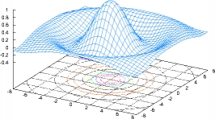

![[Lorenz Attractor]](images/lorenz.jpg)
Octave
 GNU Octave is a high-level language, primarily intended for numerical computations. It provides a convenient command line interface for solving linear and nonlinear problems numerically, and for performing other numerical experiments using a language that is mostly compatible with Matlab. It may also be used as a batch-oriented language.
For more information, see the page about Octave.
LOADPATH variable, you can use the
addpath, rmpath, and path
functions.
[Mailing List Thread]warn_divide_by_zero = false; would now be
warning ("off", "Octave:divide-by-zero");.
[Mailing List Thread]For historical news, see the news archive.